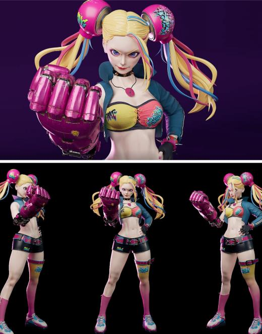

Module 02
Autodesk MAYA 2
ZBrush와 하이폴리곤 스컬핑을 통해 디테일한 형태 제작을 학습합니다.
Autodesk과정
공식 사이트의 수업 키워드를 바탕으로 핵심 내용과 결과물을 정리했습니다.

Maya 인터페이스와 폴리곤 모델링 기초를 익혀 3D 제작 흐름을 시작합니다.
ZBrush와 하이폴리곤 스컬핑을 통해 디테일한 형태 제작을 학습합니다.

레퍼런스 수집과 프리 모델링으로 캐릭터·에셋 제작 방향을 잡습니다.

개별 모델링 컨펌과 피드백을 통해 형태 완성도를 높입니다.

UV 맵핑, V-Ray 렌더링, Substance Painter로 텍스처와 재질을 완성합니다.

리깅과 인체 조인트 세팅으로 캐릭터에 움직임을 줄 구조를 만듭니다.

애니메이션 핸들, 키프레임, 그래프 에디터로 움직임을 다듬습니다.

Maya, Blender, ZBrush, ComfyUI를 연결해 CG 제작의 전체 흐름을 이해합니다.

룩뎁과 실시간 렌더링 흐름을 통해 에셋의 재질과 분위기를 완성합니다.

리깅과 애니메이션을 바탕으로 캐릭터 움직임과 장면 연출을 확장합니다.

컴포지팅과 VFX 흐름을 익혀 CG와 실사 합성 결과물을 구성합니다.

언리얼, 라이팅, 카메라 연출을 활용해 최종 렌더와 포트폴리오 컷을 완성합니다.

콘티, 모델링, UV, 쉐이딩, 라이팅, 애니메이션을 단계별 포트폴리오로 정리합니다.

금요반 일정에 맞춰 언리얼 전환과 After Effects 마감까지 포트폴리오를 완성합니다.